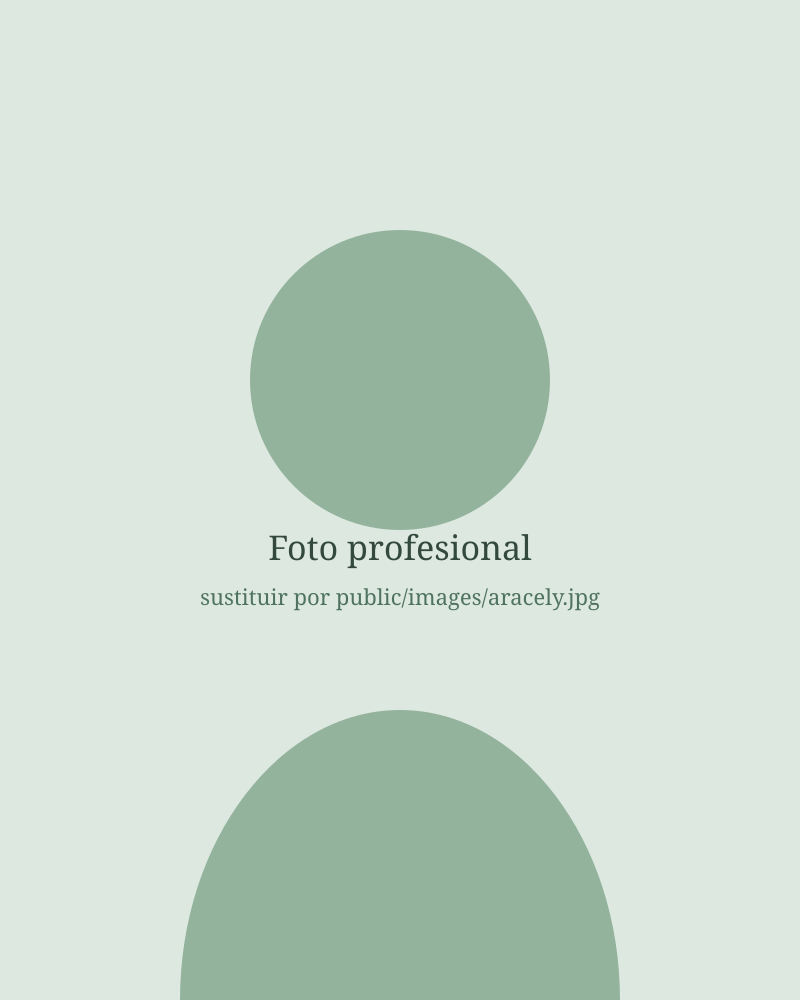

Terapia especializada en trauma · EMDR · Online
Recupera la calma que creías perdida
Terapia psicológica online en español para afrontar el trauma, la ansiedad y los desafíos emocionales, desde donde estés.
- Confianza en tu proceso
- Un espacio seguro y sin juicios para entender lo que te pasa y avanzar a tu ritmo.
- Calma en el día a día
- Herramientas concretas para regular la ansiedad y el estrés que puedes usar desde la primera sesión.
- Bienestar desde donde estés
- Sesiones por videollamada adaptadas a tu franja horaria, vivas donde vivas.

Quién te acompaña
Sobre mí
- Psicóloga colegiada
- Especialista en terapia EMDR
- Colegiada J.V.P.P. 4615
- Atención 100% online en español
Acompaño a personas hispanohablantes que viven fuera de su país de origen. Sé lo que significa sostener una vida en otro idioma, extrañar a la familia y sentir que no hay con quién hablar de verdad. Mi trabajo es darte ese espacio.
Soy psicóloga colegiada y especialista en terapia EMDR, un abordaje reconocido por la Organización Mundial de la Salud para el tratamiento del trauma.
En cada sesión encontrarás escucha real, sin prisas y sin juicios, y también algo práctico que llevarte: una idea, un ejercicio o una forma distinta de mirar lo que te está pasando.
Trabajo únicamente online, en español, con personas en Estados Unidos y Europa.
Cómo te ayudo
Cómo te ayudo
Estas son algunas de las dificultades que trabajamos en terapia. Si lo tuyo no aparece aquí, escríbeme y lo vemos.
Trauma psicológico
Experiencias difíciles o dolorosas del pasado que siguen afectando tu presente: recuerdos intrusivos, reacciones intensas o la sensación de estar en alerta constante.
Ansiedad y estrés
Preocupación que no para, pensamientos acelerados, tensión en el cuerpo o crisis de ansiedad que aparecen sin avisar.
Depresión y duelo
Tristeza sostenida, falta de energía o de sentido, y procesos de pérdida —de una persona, una relación o una etapa— que cuesta atravesar.
Autoestima
Autocrítica dura, sensación de no ser suficiente y patrones que se repiten en tus relaciones y en cómo te tratas a ti misma.
Migración y desarraigo
El desgaste de rehacer tu vida en otro país: soledad, choque cultural, culpa por la distancia y la identidad partida entre dos lugares.
Problemas familiares
Vínculos que duelen, límites difíciles de poner y conflictos que se arrastran desde hace años.
Cómo son las sesiones
- Duración
- 50 minutos
- Frecuencia
- Semanal o quincenal
- Formato
- Videollamada
- Idioma
- Español
- Confidencialidad
- Total
- Horario
- Adaptado a tu zona
Beneficios
Lo que puedes esperar
No prometo soluciones mágicas. Sí un proceso serio, con método, en el que vas a notar cambios.
Quiero empezar- Entender qué te pasa y por qué, con un lenguaje claro.
- Reducir la intensidad de los recuerdos y las emociones que hoy te desbordan.
- Recuperar el sueño, la concentración y las ganas.
- Poner límites sin sentirte culpable.
- Relacionarte desde un lugar más tranquilo, contigo y con los demás.
- Salir de cada sesión con algo concreto que aplicar.
Método
Terapia EMDR
EMDR (Desensibilización y Reprocesamiento por Movimientos Oculares) es un abordaje basado en cómo funciona el cerebro. Mediante una estimulación guiada —normalmente movimientos oculares— ayudamos a que tu sistema nervioso reprocese los recuerdos dolorosos y deje de reaccionar como si el peligro siguiera presente.
No hace falta revivirlo en detalle
No necesitas contar una y otra vez lo que pasó. Trabajamos con lo que hoy te afecta.
Respaldo científico
Recomendado por la OMS y por guías clínicas internacionales para el tratamiento del trauma.
Resultados más rápidos
En muchos casos se avanza antes que con abordajes exclusivamente conversacionales.
Funciona online
La estimulación bilateral se adapta perfectamente a la videollamada.
Cómo funciona el proceso
-
1
Escríbeme
Me cuentas por WhatsApp o email qué te trae y resolvemos dudas.
-
2
Primera sesión
Nos conocemos, revisamos tu historia y definimos objetivos.
-
3
Preparación
Aprendes recursos de regulación antes de tocar lo más difícil.
-
4
Reprocesamiento
Trabajamos los recuerdos diana con EMDR y consolidamos los cambios.
Testimonios
Lo que cuentan quienes ya hicieron el proceso
“Llegué arrastrando cosas de la infancia que creía superadas. Después del proceso duermo bien y mis relaciones cambiaron por completo. Ojalá lo hubiera hecho antes.”
“Venía de un duelo y de una situación muy dura en el trabajo. Recuperé la calma y la sensación de tener el control de mi vida otra vez.”
“Entendí de dónde venían patrones que repetía en pareja sin darme cuenta. Fue incómodo y liberador a la vez. Hoy me trato mucho mejor.”
Testimonios reales compartidos con permiso. Se han abreviado y se omiten datos identificativos.
Sin estigmas
Mitos sobre ir a terapia
Toca cada tarjeta para verla del derecho.
Herramienta gratuita
Chequeo de bienestar emocional
Cinco preguntas anónimas para hacerte una idea de cómo estás últimamente. No es un diagnóstico ni sustituye una consulta profesional.
Dudas
Preguntas frecuentes
¿Tienes otra pregunta? Escríbeme y te la resuelvo sin compromiso.
Contacto
Da el primer paso
Escríbeme y te cuento cómo puedo ayudarte. Sin compromiso.
Zona de atención: Estados Unidos y Europa
Suelo responder el mismo día